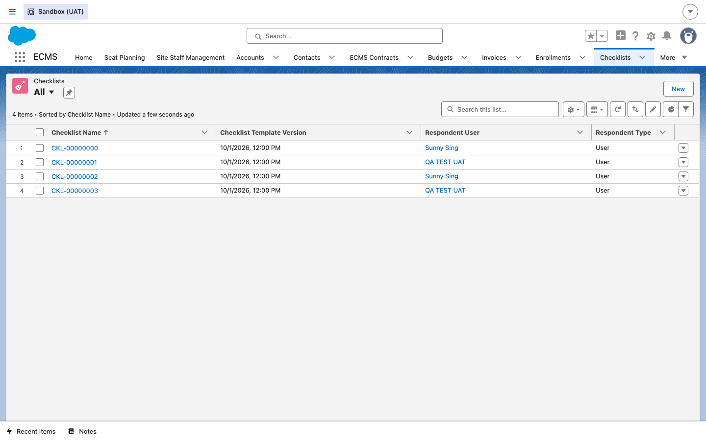
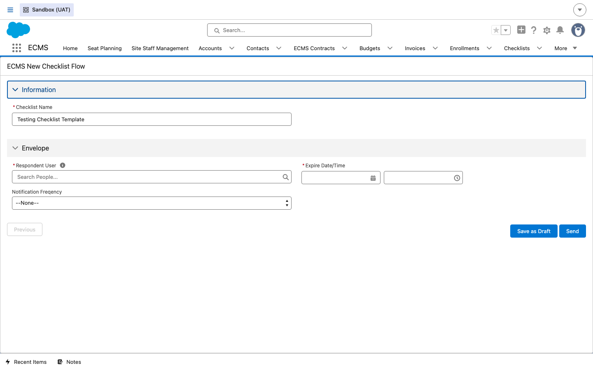
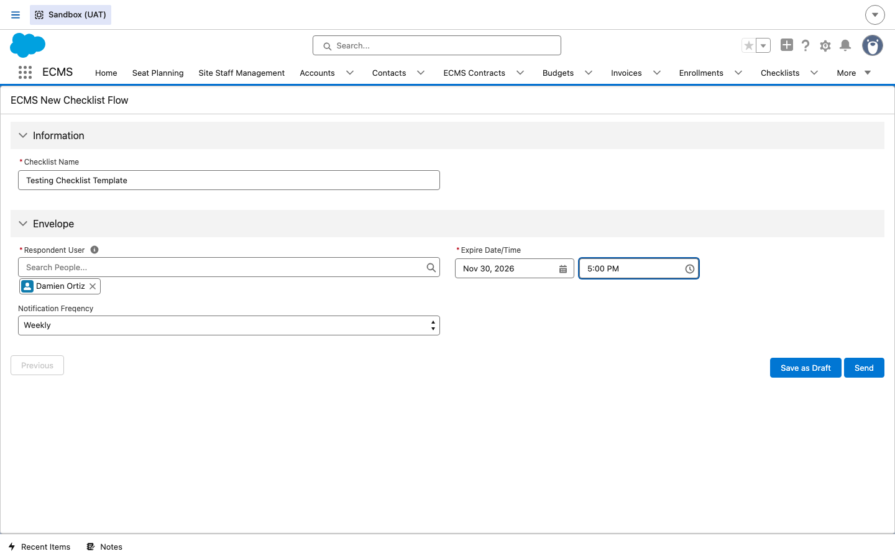
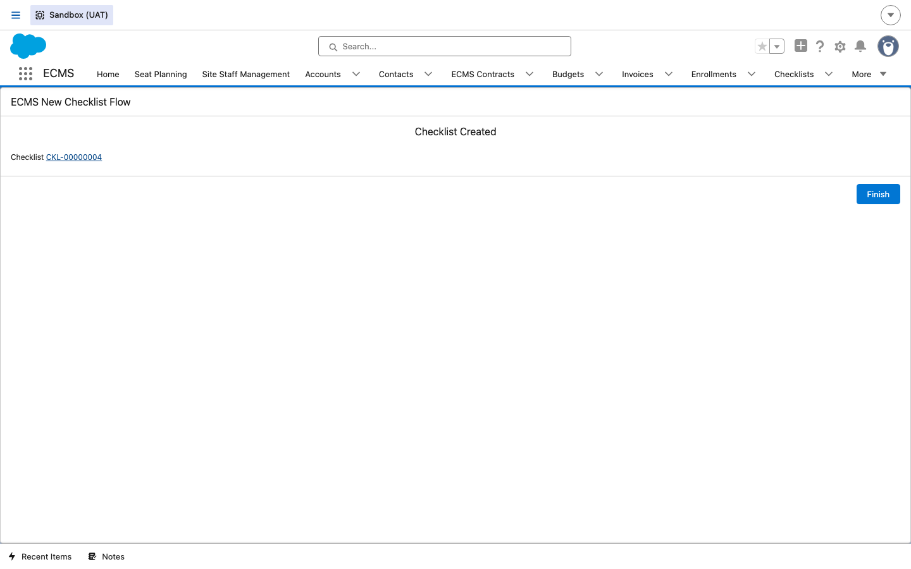
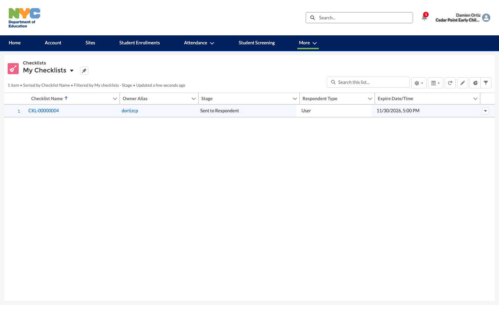
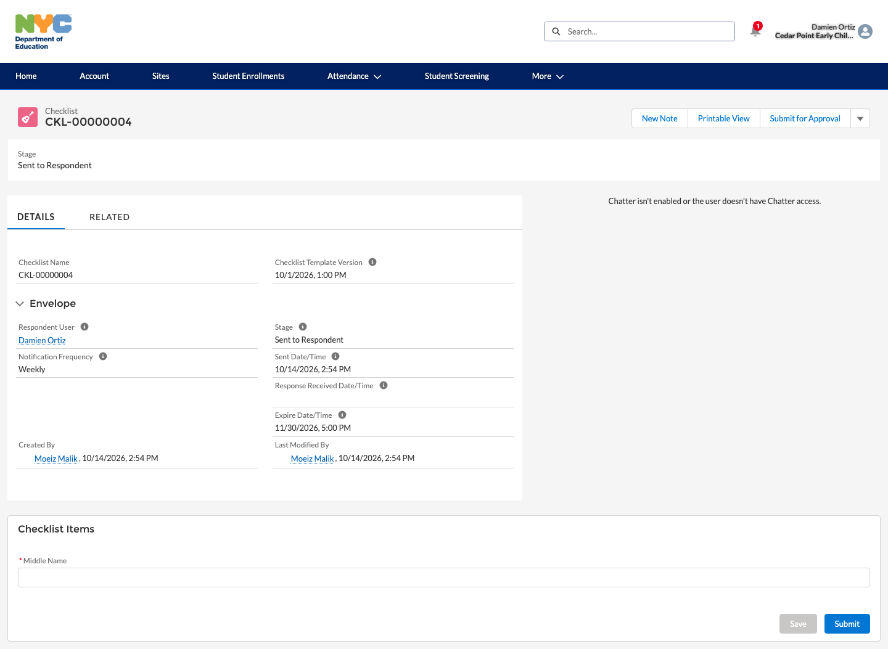
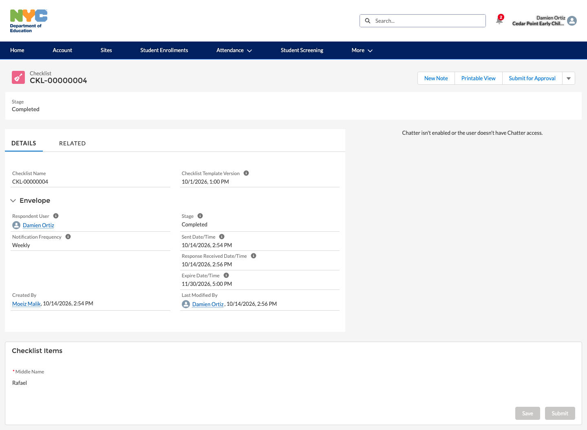

Monitoring (Checklists)
How DOE staff build and send a monitoring Checklist to a vendor from a reusable template, and how the vendor responds to it — confirmed live end to end, from creation through a completed response.
Overview
ECMS tracks site-monitoring activity as Checklist records (ECMS_Checklist__c),
each built from a reusable Checklist Template and sent to a Respondent
— a specific User, Contact, or Account. A Checklist moves through a fixed Stage path:
Draft → Sent to Respondent → In Progress → Completed (or
Cancelled) — confirmed live by creating, sending, and completing a real checklist
for this guide.
1Internal: view existing checklists
DO Open the Checklists tab.
RESULT A list loads showing Checklist Name, Checklist Template Version, Respondent User, and Respondent Type — every checklist ever sent, regardless of Stage.

2Internal: create and send a criteria checklist
DO Click New, choose From Template, and select a Checklist Template (e.g. Testing Checklist Template).
RESULT A guided flow (ECMS New Checklist Flow) opens to its second screen, asking for the Respondent User, a required Expire Date/Time, and an optional Notification Frequency (Hourly/Daily/Weekly/Monthly).

DO Search and select a Respondent User (e.g. Damien Ortiz), set an Expire Date/Time, choose a Notification Frequency, then click Send (or Save as Draft to hold it back).
RESULT ECMS confirms “Checklist Created” with a link to the new record — confirmed live (CKL-00000004), and re-querying the record shows Stage immediately set to Sent to Respondent rather than Draft, since Send (not Save as Draft) was used.


3Vendor: respond to an assigned checklist
DO From the vendor portal, click More → CheckList.
RESULT A My Checklists list loads, scoped to that respondent, showing the new CKL-00000004 with Stage Sent to Respondent — and a notification badge appeared on the bell icon, confirming Send triggers a real in-app notification to the respondent.

DO Open the checklist and fill in its Checklist Items section — the fields here come directly from the Checklist Template (this template's single required item was a text field, Middle Name) — then click Submit.
RESULT The page reloads with Stage = Completed and a populated Response Received Date/Time, and the submitted value is now shown read-only — confirmed live end to end.


4Site data and monitoring dashboards
Two remaining Phase 1 topics for this module — View Site Data and View Monitoring Dashboards — could not be independently confirmed live for this guide:
- The Checklist object has no direct Site lookup field (only Respondent Account/Contact/User) — so “View Site Data” likely refers to viewing a CBO's Sites more generally (see the Vendor & Site Setup guide) rather than a Monitoring-specific screen. This wasn't confirmed against a live example.
- No dashboard with “Monitoring” or “Checklist” in its title was found in a live search of UAT dashboards (compare to the confirmed ECMS Incident Dashboard for the Incident Reporting module) — if one exists under a different name, confirm with the test lead before relying on this guide for it.